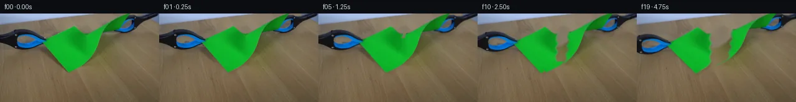

![首帧]()

Round 00
2026-11-04T22:19:35.554487+00:00像素候选变化代码 +221/−0inspection 更新
pixels a59c0c2cedac88dd · code eb48fff7cf4cccd5
查看本轮 generate.py 真实 diff
--- previous/generate.py +++ current/generate.py @@ -0,0 +1,221 @@ +from pathlib import Path + +import cv2 +import numpy as np +from PIL import Image, ImageDraw, ImageFont + +from artifact_io import save + + +ROOT = Path(__file__).resolve().parent +H, W = 144, 256 + + +def smoothstep(x): + x = np.clip(x, 0.0, 1.0) + return x * x * (3.0 - 2.0 * x) + + +def over(dst, src, alpha): + a = np.clip(alpha[..., None], 0.0, 1.0).astype(np.float32) + return dst * (1.0 - a) + src.astype(np.float32) * a + + +def affine(anchor, angle, dx, dy): + m = cv2.getRotationMatrix2D(anchor, angle, 1.0).astype(np.float32) + m[:, 2] += (dx, dy) + return m + + +def warp(arr, matrix, interpolation=cv2.INTER_LINEAR): + return cv2.warpAffine( + arr.astype(np.float32), matrix, (W, H), flags=interpolation, + borderMode=cv2.BORDER_CONSTANT, borderValue=0 + ) + + +def source_masks(src): + f = src.astype(np.float32) + r, g, b = f[..., 0], f[..., 1], f[..., 2] + yy, xx = np.mgrid[:H, :W] + + # Saturation-based paper extraction, restricted to the observed sheet region. + green_score = g - np.maximum(r, b) + paper = np.clip((green_score - 10.0) / 42.0, 0.0, 1.0) + paper *= ((xx >= 59) & (xx <= 216) & (yy <= 105)).astype(np.float32) + paper = cv2.GaussianBlur(paper, (0, 0), 0.45) + paper = np.clip(paper, 0.0, 1.0) + + # Tool extraction combines their blue paint and dark metal/plastic. Geometric + # ROIs prevent dark tabletop grain from being mistaken for foreground. + lum = 0.299 * r + 0.587 * g + 0.114 * b + blue = (b > 58) & (b > r * 1.22) & (b > g * 1.04) + dark = lum < 92 + + left_roi = np.zeros((H, W), np.uint8) + cv2.fillPoly(left_roi, [np.array([ + [0, 24], [31, 22], [50, 26], [65, 33], [79, 42], [78, 54], + [60, 54], [48, 60], [29, 59], [13, 51], [0, 52] + ], np.int32)], 1) + right_roi = np.zeros((H, W), np.uint8) + cv2.fillPoly(right_roi, [np.array([ + [164, 0], [256, 0], [256, 21], [235, 19], [222, 26], [207, 34], + [183, 33], [171, 25] + ], np.int32)], 1) + + raw_left = ((blue | dark) & (left_roi > 0)).astype(np.uint8) * 255 + raw_right = ((blue | dark) & (right_roi > 0)).astype(np.uint8) * 255 + # Close one-pixel photographic holes, then recover a soft antialiased rim. + kernel = np.ones((3, 3), np.uint8) + raw_left = cv2.morphologyEx(raw_left, cv2.MORPH_CLOSE, kernel) + raw_right = cv2.morphologyEx(raw_right, cv2.MORPH_CLOSE, kernel) + left_tool = cv2.GaussianBlur(raw_left.astype(np.float32) / 255.0, (0, 0), 0.55) + right_tool = cv2.GaussianBlur(raw_right.astype(np.float32) / 255.0, (0, 0), 0.55) + return paper, np.clip(left_tool, 0, 1), np.clip(right_tool, 0, 1) + + +def tear_geometry(paper): + yy, xx = np.mgrid[:H, :W] + ys = np.array([0, 25, 34, 41, 48, 55, 62, 70, 77, 84, 90, 96, 143], np.float32) + xs = np.array([145, 141, 138, 136, 139, 135, 138, 134, 136, 131, 120, 111, 106], np.float32) + cut = np.interp(np.arange(H), ys, xs)[:, None] + signed = xx - cut + # A narrow soft ownership transition retains antialiased source edge pixels. + left = paper * np.clip(0.5 - signed / 1.4, 0.0, 1.0) + right = paper * np.clip(0.5 + signed / 1.4, 0.0, 1.0) + seam_band = paper * np.clip(1.0 - np.abs(signed) / 2.2, 0.0, 1.0) + return left, right, seam_band, cut … diff truncated; 134 more lines …